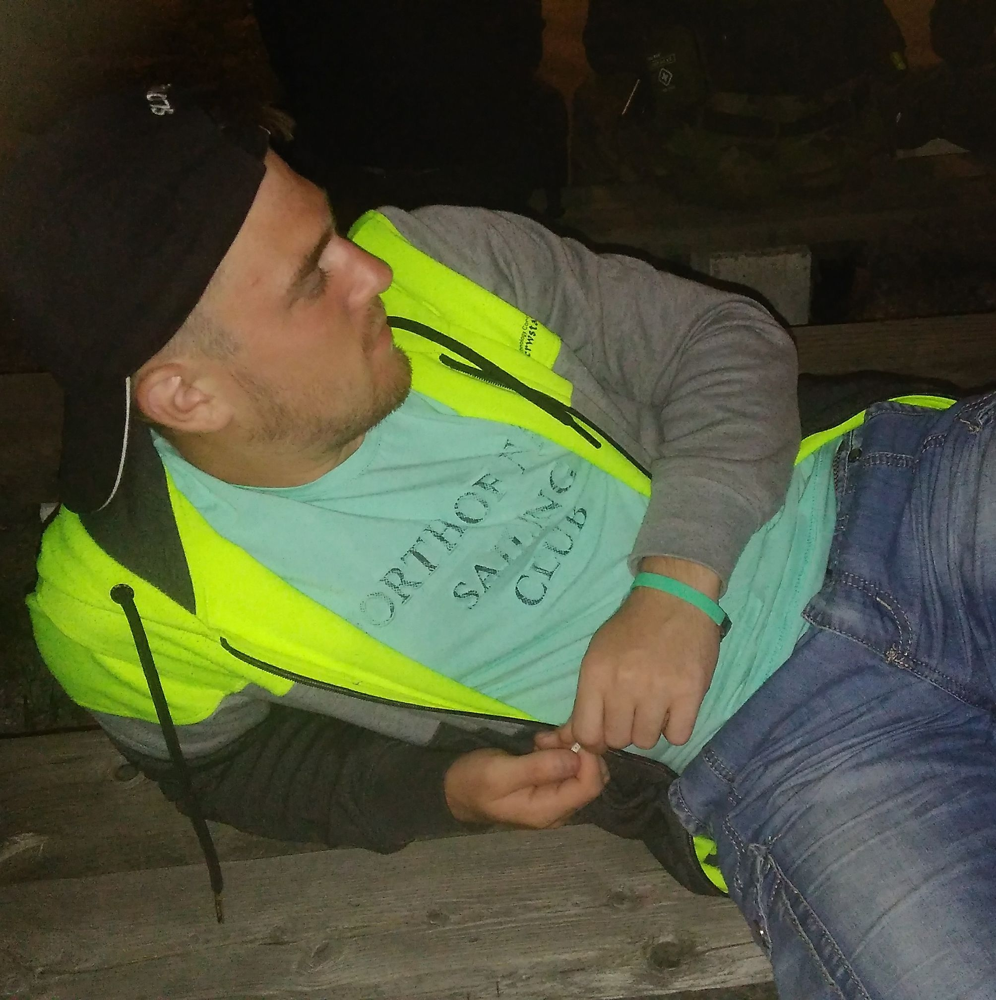

Čo by som o sebe povedal?

Volám sa Lukáš Pribula.
Narodil som sa 08.11.1998. Bývam v malej obci Krivany,
ktorá sa nachádza v okrese Sabinov na východe Slovenska.
Momentálne študujem na FEI STU v Bratislave, odbor Aplikovaná Informatika.
Medzi moje záľuby patrí stolný tenis, plávanie, bicyklovanie a hlavne lyžovanie.
Ovládam dva cudzie jazyky: Anglicky a nemecky.
Výborne viem pracovať s počítačom.
Taktiež ovládam rôzne softwarové programy a desať prstovú techniku písania na počítači.
Mojimi výhodami sú zodpovednosť, nekonfliktnosť a organizačné vlastnosti.
Som ochotný vzdelávať sa a získavať nové skúsenosti.
V budúcnosti by som chcel pracovať v oblasti IT.
Doplneni text
Stolný tenis, hovorovo pingpong, je druh športu, pri ktorom je snahou hráča zahrať loptičku ponad,
prípadne popri sieťke na špeciálnom stole tak, aby jej vrátenie spôsobovalo ťažkosti súperovi,
prípadne aby ju nemohol vrátiť.
Stolný tenis patrí medzi najrýchlejšie športové hry na svete, učí mať rýchly odhad hernej situácie
a jej okamžité riešenie najvhodnejším herným spôsobom. Stolný tenis je individuálny šport hraný
v halách špeciálne na to určených, ale aj v klasických krytých halách, kde sa dajú rozmiestniť stoly na hru.
Lyžovanie je zimný šport, ktorý spočíva v pohybe človeka vlastnou silou po snehu na lyžiach,
čo je pár dlhých úzkych dosiek, pôvodne drevených, dnes z kompozitných materiálov,
pripojených k chodidlám pomocou lyžiarskeho viazania. Ako alternatíva k lyžiam sa používa aj snowboard,
čo je jedna širšia doska, ku ktorej sú pripevnené obe chodidlá. Lyžovanie pôvodne slúžilo na dopravu,
v priebehu 20. storočia sa postupne stalo hlavne športovou a rekreačnou aktivitou.
Lyžovanie je mnohými disciplínami zastúpené na zimných olympijských hrách.
Cyklistika je jazda na bicykli s rekreačným, športovým,
turistickým alebo dopravným zameraním. Osoby, ktoré jazdia na bicykli sú cyklisti.
Cyklistika vznikla po skonštruovaní bicykla v 19. storočí. Dnes je na Zemi asi miliarda bicyklov,
ktoré sú ekologickým a v niektorých oblastiach dôležitým druhom dopravy. Cyklistika patrí k najkrajším,
ale fyzicky najnáročnejším športom.